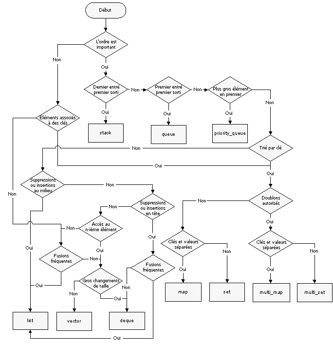

On est souvent amené à implémenter des choses qui nécessitent de stocker beaucoup de données et on s'aperçoit assez vite qu'on y applique souvent le même jeu d'opérations. À partir de là, on peut se poser la question du choix de cette structure : laquelle présentera les meilleures performances pour ce que je veux faire ? Et comme il n'est quasiment jamais question de réinventer la roue, il existe un nombre important de structures déjà implémentées (dans la STL ou dans Boost). Comment s'y retrouver ?
Ce tutoriel est là pour répondre à ces deux questions. Beaucoup de débutants ne se les posent pas, ou pas assez. Il n'est ainsi pas surprenant de les voir "patauger" sur le forum de ce site en essayant soit de tout faire avec un std::vector, en écrivant eux-même une structure de tas parce qu'ils en ont besoin, ou encore en utilisant std::set pour les ensembles où l'ordre n'a pas d'importance. Souvent, le manque de recherche et l'ignorance en sont la cause. Mais ce n'est pas la seule : certains débutants sont également rebutés par des bibliothèques tierces comme Boost parce que cela sort du cadre de ce qu'ils ont l'habitude de voir sur ce site. C'est bien dommage.
Ce cours s'adresse aussi aux plus expérimentés. Une piqure de rappel ne fait jamais de mal.
De manière concrète, ce cours présentera brièvement chaque structure de données "connue", la complexité des différentes opérations qu'on serait susceptibles d'y appliquer, ainsi qu'un tableau résumant les classes C++ les plus utilisées pour chaque structure en précisant dans quel cas leur utilisation est justifiée.
La première question que vous êtes en droit de vous poser, c'est le pourquoi : pourquoi faut-il attacher une grande importance au choix des structures de données pour tel ou tel algorithme (à supposer qu'ils en utilisent) ?
En fait, quand on implémente un algorithme, on doit toujours chercher à le rendre le plus efficace possible. Il y a de nombreuses opérations "courantes" que l'on peut appliquer sur les structures de données : chercher un élément, chercher l'élément le plus grand, effacer un élément, etc. Comme on va le voir par la suite, certaines structures de données se prêtent mieux que d'autres à certaines de ses opérations. Rendre un algorithme efficace requiert donc (si l'algorithme en question en a besoin) de choisir une structure de données efficace pour les opérations qu'il est susceptible d'y appliquer en grand nombre. Indépendamment de la catégorie de la structure (linéaire, arborescente, circulaire, etc.), il faut pouvoir choisir dans une même catégorie la meilleure structure pour un cas de figure donné. Par exemple choisir une liste plutôt qu'un tableau, ou l'inverse.
Il faut penser "grand" : sur une structure comportant très peu d'éléments (par exemple 10 ou 100), on ne verra pas de différence au niveau des temps d'exécution des différentes opérations. Par contre, un mauvais choix se fait très vite remarquer dans deux cas : quand la structure est beaucoup plus grande (par exemple quand elle contient 50000 éléments, ou 10000000), ou quand ces opérations se répètent de très nombreuses fois, typiquement quand on la retrouve dans une boucle sur la taille de l'entrée, ou - pire - dans une boucle imbriquée. Voire même les deux.
Ce choix de la structure "idéale" se fait à travers l'étude des besoins de notre algorithme (par exemple, si l'on accède souvent de manière arbitraire à un élément, il faut trouver la structure de données la plus efficace pour cette opération). Parfois, deux opérations qui ne sont pas optimales sur la même structure doivent être exécuter de très nombreuses fois : dans ce cas, il faut soit revoir notre algorithme (il peut exister d'autres moyens d'arriver au même résultat), soit trouver une structure qui se comporte assez bien pour les opérations, soit choisir la structure pour laquelle l'opération la plus présente est optimale. Le mieux à faire dans ces cas où l'on hésite, c'est de déterminer de façon empirique quelle structure de données permet l'implémentation la plus efficace : on effectue alors des tests de vitesse.
Certaines structures de données sont carrément indispensables à certains algorithmes : l'un des moyens d'écrire un parcours en largeur nécessite une file, un analyseur syntaxique LR nécessite une pile (même si elle peut être implicite dans le cas des analyseurs récursifs ascendants), le tri par tas nécessite... un tas, etc. En d'autres termes, il arrive qu'on ne peut pas utiliser une autre structure ; cela irait à l'encontre de toute logique.
Maintenant, venons-en au vif du sujet : en C++, quand utiliser quoi ?
Typiquement, la définition la plus simple que l'on pourrait donner d'une "structure linéaire" est la suivante : une structure est dite linéaire si l'on peut concevoir une fonction (dite "successeur") qui à chacun de ses éléments sauf le dernier associe un unique autre élément de la même structure (l'élément suivant). De plus, on doit pouvoir parcourir l'intégralité de la structure à l'aide de cette fonction sans visiter deux fois le même élément.
Une conséquence directe de cette définition un peu barbare est que l'on peut s'imaginer et représenter le contenu d'une telle structure de façon linéaire. Commençons par la structure linéaire la plus connue.
Les tableaux
Un tableau représente un ensemble d'éléments contigües en mémoire. Cela implique qu'il suffit de connaitre la première case pour accéder en temps constant à toutes les autres cases (c'est ce qu'on appelle l'indexage d'un tableau). En revanche, il peut y avoir des choses avant et des choses après. Quand on essaye donc d'ajouter un élément, l'environnement d'exécution ne peut pas garantir de pouvoir conserver le même tableau. Il va donc le copier intégralement dans une zone plus grande en y ajoutant notre nouvelle case. C'est cher payé.
Retirer un élément d'un tableau est une opération à multiples facettes : si l'on retire le premier ou le dernier élément, on n'est pas obligé de réécrire le tableau. S'il y avait de la place pour N éléments, il y en a à fortiori pour N-1. Le soucis c'est quand cette opération est répétée M fois. Beaucoup d'espace reste alors alloué et il ne sert strictement à rien, ce qui est plutôt gênant. C'est pourquoi de temps en temps il est nécessaire de réallouer tout un tableau, plus petit. L'opération nécessite donc potentiellement N-1 copies pour un tableau initial de N cases. Pas très efficaces.
C'est encore pire si l'on retire un élément en plein milieu : on est obligé de décaler toute la partie qui se situe après cet élément d'une case vers l'avant. De la même manière, cette opération peut nécessiter un grand nombre d'opérations.
Opérations
Complexité
Accès arbitraire
O(1)
Insertion
O(n)
Suppression
O(n)
Pour manipuler les tableaux, nous avons différentes classes à notre disposition (je ne liste que les plus connues) :
Classe
Description
std::vector
Optimisé pour les tableaux dynamiques (taille variable)
boost::array
Tableau statique (taille fixée et connue at compile-time)
boost::multi_array
Idéal pour l'utilisation de tableaux à plusieurs dimensions
std::string
Idéal pour les tableaux de char type "chaine de caractères"
std::valarray
Simplifie les opérations mathématiques sur les tableaux
boost::matrix
Presque indispensable pour bien manipuler des matrices
boost::shared_array
Tableau de pointeurs sur des zones allouées dynamiquement
std::bitset
Tableau de bits d'une taille connue à la compilation
À noter que boost::array est devenu standard, et si votre STL est à jour, vous avez std::array.
Liste, pile et file
Quand on veut favoriser l'insertion et la suppression au profit de l'accès arbitraire, il est facile d'imaginer un ensemble de données qui ne soit pas contigus en mémoire mais dans lequel chaque élément possède en attribut l'adresse du prochain (permettant tout de même de connaitre toute la séquence). Pour cela, il y a la structure de données que vous connaissez tous : la liste.
À supposer que l'on connaisse le premier et le dernier élément d'une liste, on peut y accéder en temps constant. Cependant, on ne pourra pas accéder immédiatement aux autres éléments : on obligé de suivre le chainage que nous impose une liste. Dans le cas d'une liste supposée chaînée dans les deux sens de parcours (dite doublement chaînée), l'accès arbitraire nécessite au pire N/2 opérations où N est le nombre d'éléments. Qu'on ne s'en réjouisse pas : N/2, c'est de l'ordre de N et sur N éléments, si N opérations sont lentes, N/2 le seront aussi. La liste n'est donc pas adaptée à l'accès arbitraire aux données.
Là où une liste est plus intéressante, c'est au niveau des insertions/suppressions : il suffit en effet de désallouer un seul élément (c'est possible vu qu'il s'agira d'une unité mémoire) et de relier le précédent au suivant pour rétablir un chaînage correct. Grosso modo, on a donc 2 opérations. Ce n'est pas ce qui compte, il faut en réalité constater que ce nombre (déjà très petit) ne varie pas avec la taille de l'entrée. La liste est donc optimale pour tout ce qui est insertion ou suppression.
Parfois, on est amené à utiliser des listes d'une manière un peu spéciale. On peut par exemple ne vouloir qu'ajouter ou retirer des éléments en tête de liste. On parle alors d'une pile. De manière symétrique, on peut être amené à ne vouloir qu'insérer des éléments d'un côté et les retirer de l'autre. C'est une file.
Opérations
Complexité
Accès arbitraire
O(n)
Insertion
O(1)
Suppression
O(1)
Classe
Description
std::list
Liste doublement chaînée
std::stack
Bien pratique pour manipuler des piles
std::queue
Idéal pour les files
std::deque
Liste optimisée pour l'accès arbitraire
std::forward_list
Liste simplement chaînée (C++0x)
Tableau associatif et ensemble
Vous pouvez être amené à vouloir implémenter un dictionnaire ou toute autre association d'un élément à un autre. On parle de tableaux associatifs ou tables de symboles. On les utilise par exemple en compilation où elles peuvent associer un nom de variable à son type, une fonction avec sa définition, etc. Cette structure de données se doit d'être efficace dans la recherche d'un élément à partir de sa clef (par exemple un mot avec sa définition dans le cas d'un dictionnaire) et dans l'insertion d'un couple (clef, élément).
L'implémentation de ce type abstrait est souvent faite par le biais d'une table de hachage. Il s'agit en réalité d'un tableau ordinaire (pour simplifier la chose). Les indices sont des nombres entiers calculés à partir des clefs (qui peuvent être n'importe quoi) via une fonction de hachage. On assimile généralement ce genre de structure à std::map, ce qui est une grossière erreur. Vous verrez qu'un objet de type std::map représente en réalité autre chose.
Un peu de la même manière, on peut implémenter les ensembles. La vérification de l'existence d'un élément dans un ensemble ainsi que les opérations d'insertion doivent être possibles en temps constant.
Opérations
Complexité
Recherche
O(1)
Insertion
O(1)
Classe
Description
boost::unordered_map
Adapté pour les tableaux associatifs
boost::unordered_set
Pour les ensembles d'éléments
boost::unordered_multimap
Tableaux associatifs où une clef peut référer à plusieurs éléments
boost::unordered_multiset
Ensembles dans lesquels une valeur peut être présente plus d'une fois
De la même manière que boost::array, ces classes font désormais partie de la STL. Vous les retrouvez donc également dans l'espace de nom standard.
Un arbre est un graphe acyclique orienté où l'on a définit un nœud central appelé racine et dans lequel chaque nœud (sauf la racine) admet exactement un parent. Les nœuds n'admettant pas de fils sont dits feuilles. Concrètement, une telle structure peut se représenter sous une forme arborescente que vous connaissez bien (je suppose).
Les tas
Un tas est un arbre binaire, c'est-à-dire que chaque nœud comporte au plus deux nœuds fils. La particularité du tas réside dans l'ordre qu'il impose à ses éléments : chaque parent doit avoir une valeur plus grande (ou plus petite, mais c'est plus rare) que ses fils. Le maximum (respectivement le minimum) correspond donc à la racine. Un tas est conventionnellement équilibré, c'est-à-dire que sa profondeur en chaque point varie au plus d'une unité.
Les opérations que l'on peut effectuer sur un tas sont typiquement les suivantes : récupération du maximum et insertion d'un élément. Toute la subtilité réside dans le fait de devoir réaliser ces opérations sans perturber la caractère essentiel du tas.
Il est possible d'implémenter un tas (et tout arbre binaire équilibré) de manière linéaire, sous la forme d'un tableau. On s'imposera alors simplement une convention permettant d'associer chaque nœuds à ses fils : les deux fils du nœud à l'indice n ont respectivement pour indice 2n+1 et 2n+2 (si l'indexage commence à 0, ce qui est souvent le cas).
Le champ d'application des tas est très vaste : on peut s'en servir pour classer des tâches, de la plus prioritaire à la moins importante, mais cette structure est également le pilier d'un algorithme de tri appelé tri par tas. Certains langages s'en servent aussi pour les allocations dynamiques de mémoire (les allocations statiques étant effectuées sur une pile).
Opérations
Complexité
Lecture du maximum
O(1)
Suppression du maximum
O(\log{n})
Insertion d'un élément
O(\log{n})
Solution
Description
std::priority_queue (classe)
Idéal pour les files de priorité (implémentées par un tas)
Une deuxième catégorie d'arbre est également souvent sollicitée : les arbres binaires de recherche, ou ABR. Dans un tel arbre, tous les éléments du sous-arbre gauche à un nœud n sont inférieurs à n et tous les éléments du sous-arbre droit lui sont supérieurs. On doit retrouver cette propriété de manière récursive au niveau de chaque nœud.
Un ABR est donc une manière de représenter une collection triée d'éléments. C'est pour cette raison qu'elle est uniquement envisageable quand les éléments sont comparables entre eux (si a et b sont deux éléments, on doit pouvoir dire si a < b est vrai ou faux). Généralement la fonction de comparaison est paramétrable, permettant n'importe quelle arborescence triée souhaitée. L'intérêt d'un ABR réside dans la recherche et l'insertion d'éléments dans un ensemble trié : celles-ci doivent être optimales tout en conservant l'ordre entre les éléments.
C'est pour cette raison qu'un ABR est idéalement équilibré, sinon on pourrait très bien envisager un arbre balancé uniquement d'un côté qui ne serait en fait nullement différent d'une simple liste chaînée triée. Dans ce cas l'insertion et la recherche d'un élément tout en conservant l'ordre ne seraient plus optimales du tout. Il existe différent type d'ABR équilibré : les arbres rouge-noir, les AVL, etc.
Il est possible d'utiliser un ABR de manière naïve où chaque élément ne représente qu'une information. Cependant, on peut l'utiliser d'une deuxième manière : en l'ordonnant selon des clefs et en ajoutant à chaque nœud un attribut supplémentaire correspondant à une valeur, on arrive à reproduire le type abstrait d'un tableau associatif. La seule différence réside alors dans le fait que l'on aurait alors une notion d'ordre, qui induit évident des performances moins spectaculaires que les tables de hachage.
Il est intéressant de noter que la valeur la plus à gauche de l'arborescence se trouve être le minimum de l'ensemble. Symétriquement, la valeur la plus à droite est le maximum. On peut alors stocker une référence sur chacune de ses valeurs afin d'y accéder en temps constant.
Opérations
Complexité
Lecture du maximum
O(1)
Lecture du minimum
O(1)
Insertion d'un élément
O(\log{n}) (ABR équilibré)
Recherche d'un élément
O(\log{n}) (ABR équilibré)
Classe
Description
std::set
Idéal pour les ABR équilibrés et les ensembles ordonnés
std::map
Tableau associatif ordonné
std::multiset
Ensemble ordonné pouvant contenir plusieurs fois la même valeur
std::multimap
Tableau associatif ordonné pouvant indexer plusieurs fois la même clef
boost::bimap
Tableau associatif ordonné avec association dans les deux sens
Essayez d'insérer des nombres en désordre dans un objet de type std::set. Ensuite, parcourez l'ensemble à l'aide des itérateurs que vous fournis la classe et remarquez que vous récupérer vos nombres de manière triée. Oui oui, si l'on a de la mémoire à gâcher, on peut implémenter un tri optimal basé sur les comparaisons (en O(n\log{n})) en se servant uniquement de std::set ou std::multiset !
Ce n'est pas tout ! Il existe bien d'autres structures de données avec leurs implémentations respectives. Un exemple assez exotique est Boost.Fusion. Cette bibliothèque propose une version des conteneurs classiques adaptés... à la méta-programmation template. Je vous laisse voir ça par vous-même, ici.
De plus, il est parfois nécessaire d'avoir une structure qui permette non pas de stocker plusieurs éléments, mais un seul élément qui peut avoir plusieurs types. Quand ces types sont connus à l'avance, on utilisera boost::variant. Cette classe remplace une lacune du C++ qui est la mauvaise gestion du conteneur de type union. Quand on ne connait pas les différents types possibles, on applique une stratégie de type erasure. Une bonne implémentation de ce concept : boost::any.
Il existe également bon nombre d'algorithmes qui travaillent sur des graphes. Heureusement, Boost est encore là pour nous sauver avec Boost.Graph. Plus rarement, on peut vouloir manipuler une structure circulaire (imaginer un tableau dont la dernière case rejoint ensuite la première), par exemple pour implémenter une playlist. Pour cela, il y a boost::circular_buffer. Et si déjà je me retrouve à parler un peu de tout, autant ne pas le faire à moitié : pour les tableaux de bits (std::bitset) dont on ne connait pas la taille à la compilation, il y a boost::dynamic_bitset.
Avant de vous laisser, je tenais à partager avec vous ce remarquable schéma que j'ai pu trouver sur developpez.com :

J'espère que ce cours servira à plus d'un. Je pourrais encore vous marteler le fait que le choix d'une structure de données adaptée à votre problème est une chose primordiale. Vous ne pouvez pas espérer coder efficacement si vous n'avez pas ce réflexe et si vous utilisez std::vector à tort et à travers par exemple. Je veux bien que cette classe soit simple et pratique, mais ce n'est pas une raison. C'est aussi le cas de toutes les classes que je viens de vous présenter, alors : soyez efficace. :) (premier smiley)